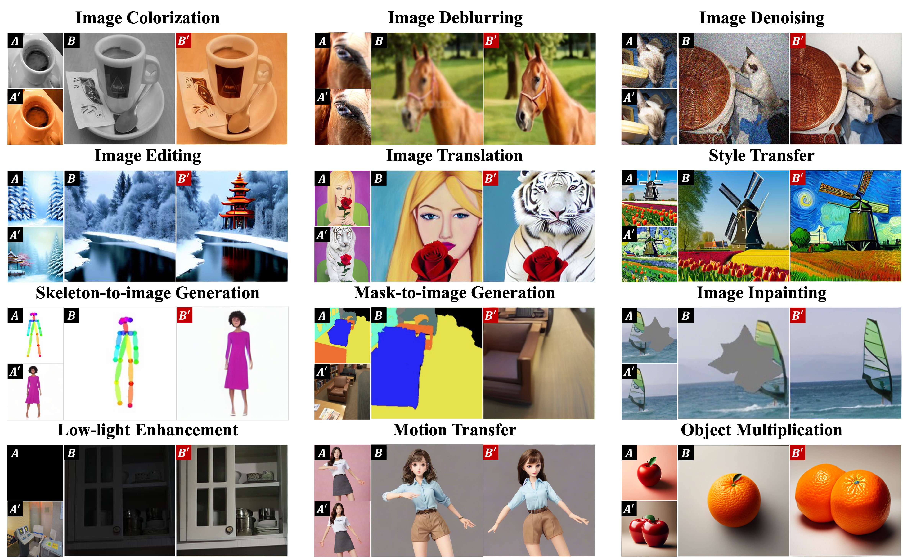
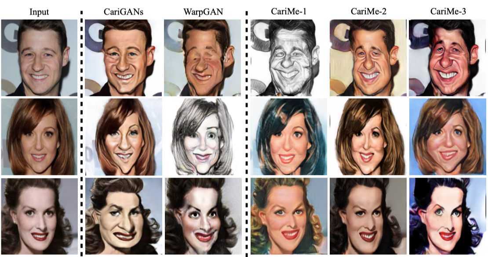
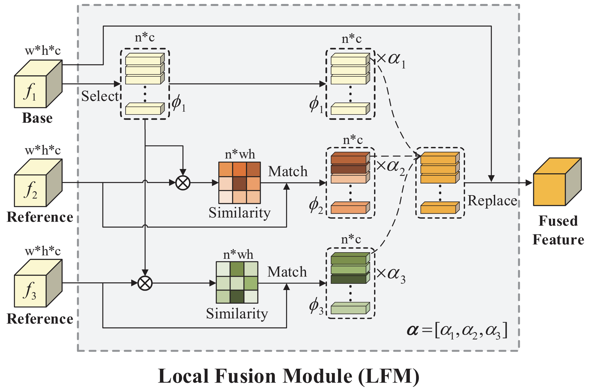
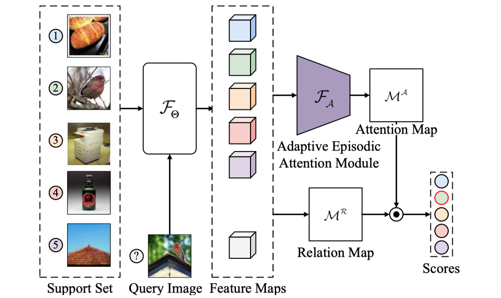
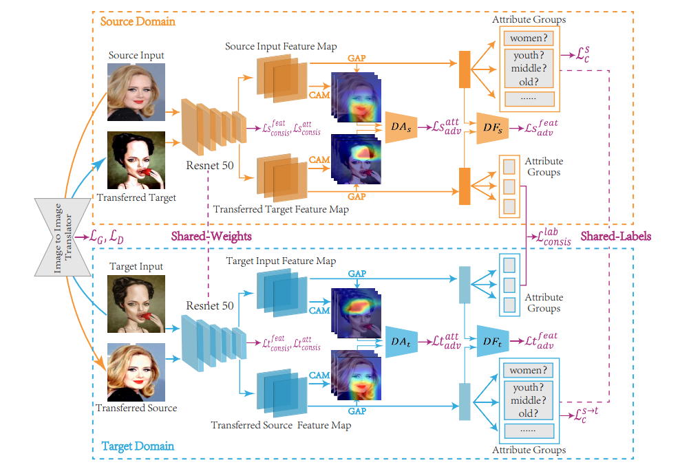
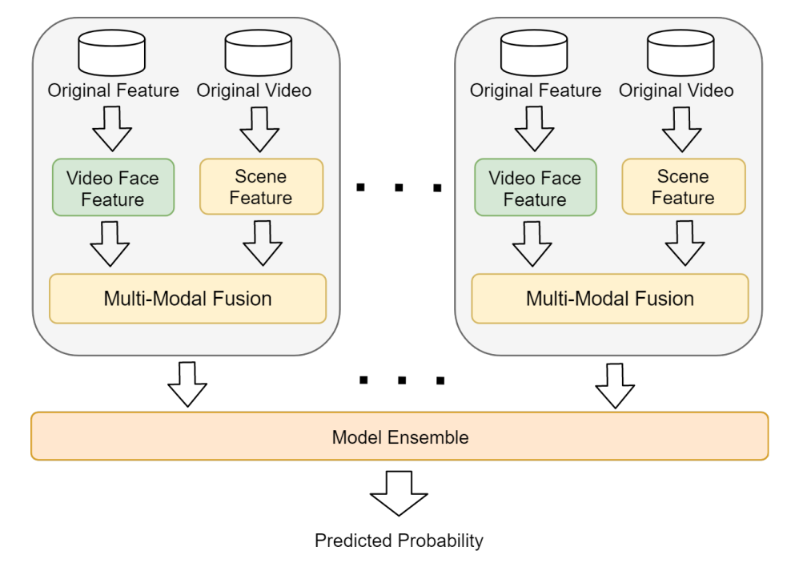

|
Zheng Gu (顾峥)
I am a Ph.D. candidate at Department of Computer Science and Technology, Nanjing University as a member
of
Reasoning and Learning Group, advised by
Prof. Yang Gao and
Prof. Jing Huo.
Currently, I am also a joint Ph.D. at Department of Computer Science and Technology, City Univercity of
HongKong, advised by Prof. Jing Liao.
I received my B.Sc. degree in Computer Science and Technology from Nanjing University in June 2017.
My research interests lie in machine learning and computer vision, with a focus on the application
and adaptation of generative models in a wide range of scenarios.
Email /
GitHub /
Google Scholar
|
|
|

|
Analogist: Out-of-the-box Visual In-Context Learning with Image Diffusion Model
Zheng Gu, Shiyuan Yang, Jing Liao, Jing Huo, Yang Gao
SIGGRAPH, 2024 (Journal Track)
[Project Page]
[Code]
|
|

|
CariMe: Unpaired Caricature Generation with Multiple Exaggerations
Zheng Gu, Chuanqi Dong, Jing Huo, Wenbin Li, Yang Gao
TMM, 2021
[Paper]
[Arxiv]
[Code]
|
|

|
LoFGAN: Fusing Local Representations for Few-shot Image Generation
Zheng Gu, Wenbin Li, Jing Huo, Lei Wang, Yang Gao
ICCV, 2021
[Paper]
[Code]
|
|

|
Learning Task-aware Local Representations for Few-shot Learning
Chuanqi Dong, Wenbin Li, Jing Huo, Zheng Gu, Yang Gao
IJCAI, 2020
[Paper]
[Code]
|
|

|
Unsupervised Domain Attention Adaptation Network for Caricature Attribute Recognition
Wen Ji, Kelei He, Jing Huo, Zheng Gu, Yang Gao
ECCV, 2020
[Paper]
[Code]
|
|

|
DeepMEF: A Deep Model Ensemble Framework for Video Based Multi-modal Person Identification
Chuanqi Dong, Zheng Gu, Zhonghao Huang, Wen Ji, Jing Huo, Yang Gao
ECCV, 2020
[Paper]
[Code]
|
|
Awards
Huawei Scholarship, Nanjing University, 2021
Suzhou Yucai Scholarship, Nanjing University, 2021
Exemplary Postgraduate Student, Nanjing University, 2021
PhD Talent Scholarship, Nanjing University, 2020
Outstanding Postgraduate Student, Nanjing University, 2020
People's Scholarship, Nanjing University, 2014-2016
|
|
Teaching
CS3402: Database Systems, 2022/2023, City University of HongKong, Teaching Assistant (TA)
Artificial Intelligence, 2018/2019, Nanjing University, Teaching Assistant (TA)
Object-oriented Design Method, 2019/2020, Nanjing University, Teaching Assistant (TA)
|
|
Service
Conference/Journal Reviewer: ICCV, ECCV, ACCV, WACV, Multimedia Systems.
Executive Chair: CCF Nanjing University Student Branch in 2019-2021.
Vice President: Students' union of Department of Computer Science and Technology, Nanjing University in 2015-2016.
|
You could steal the source code here
|
|
{kind=link}